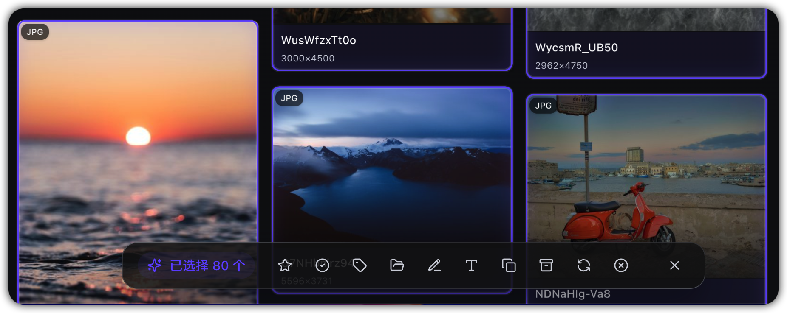
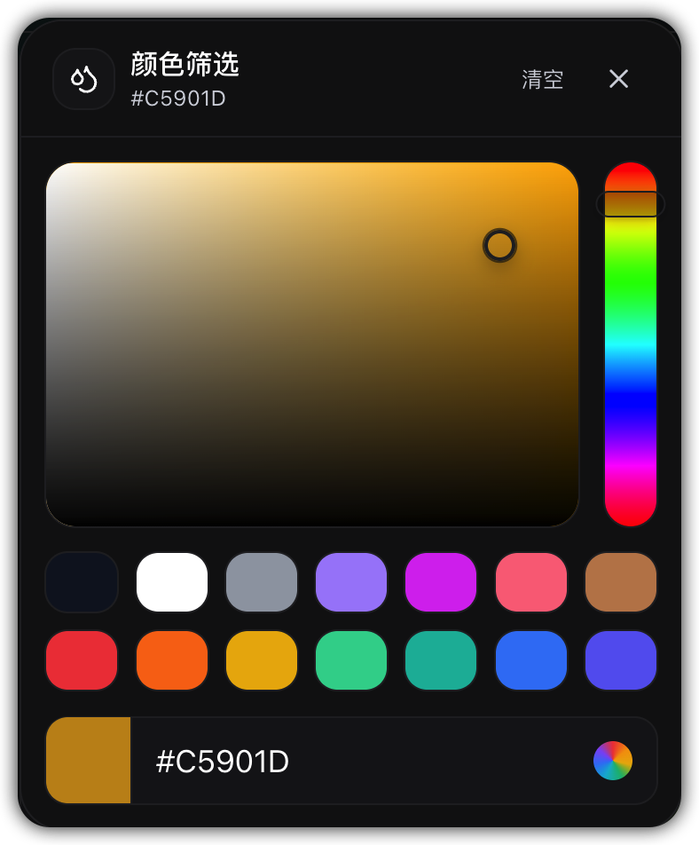
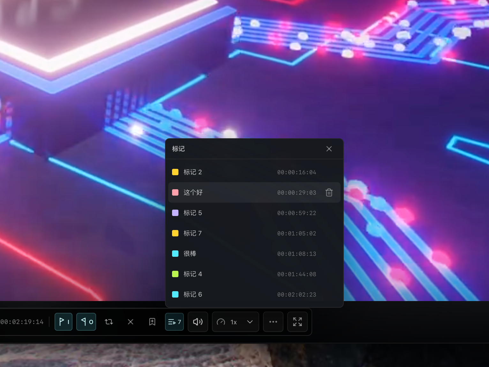
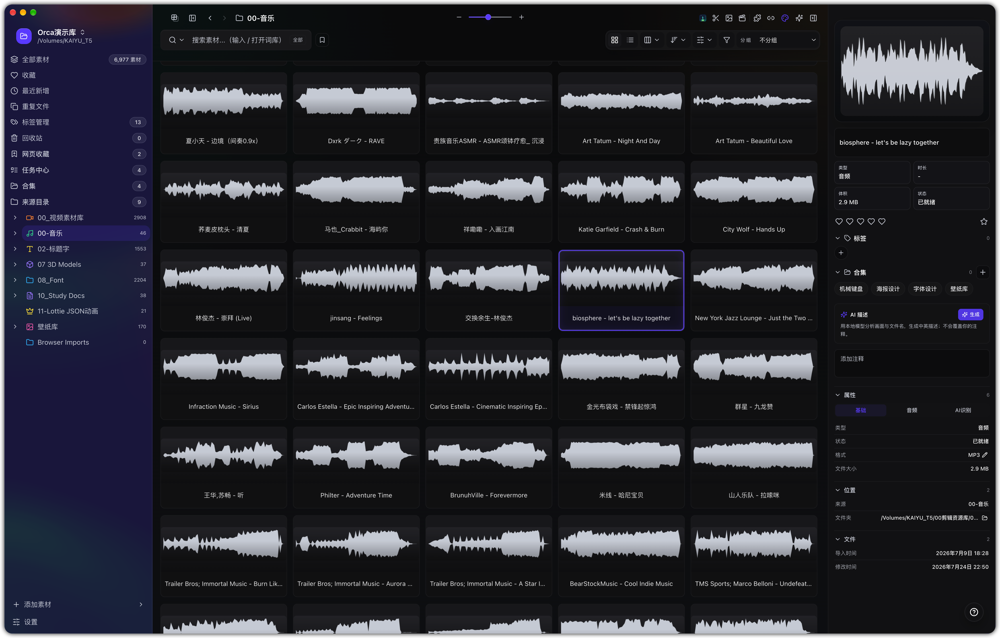
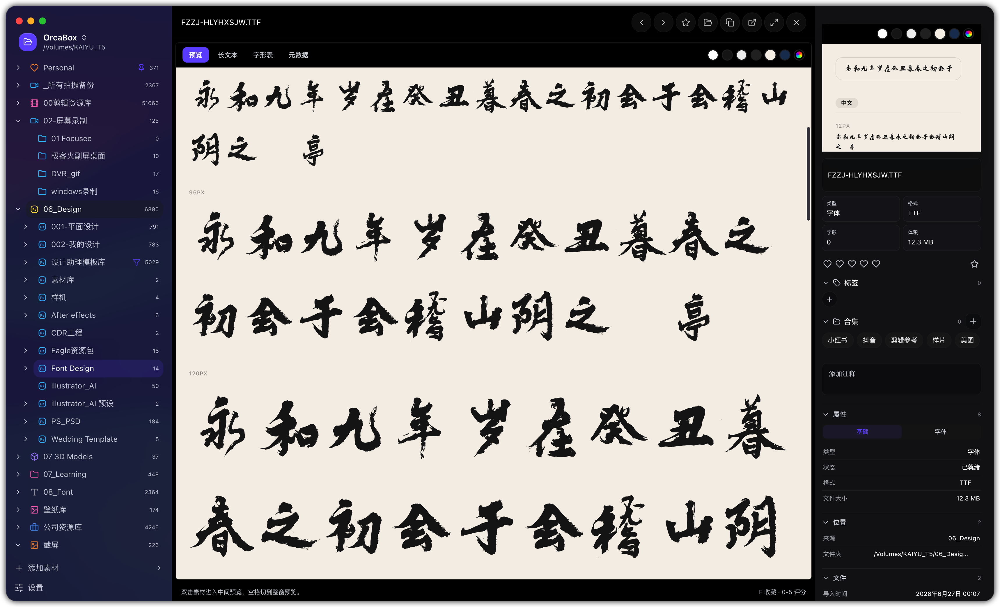
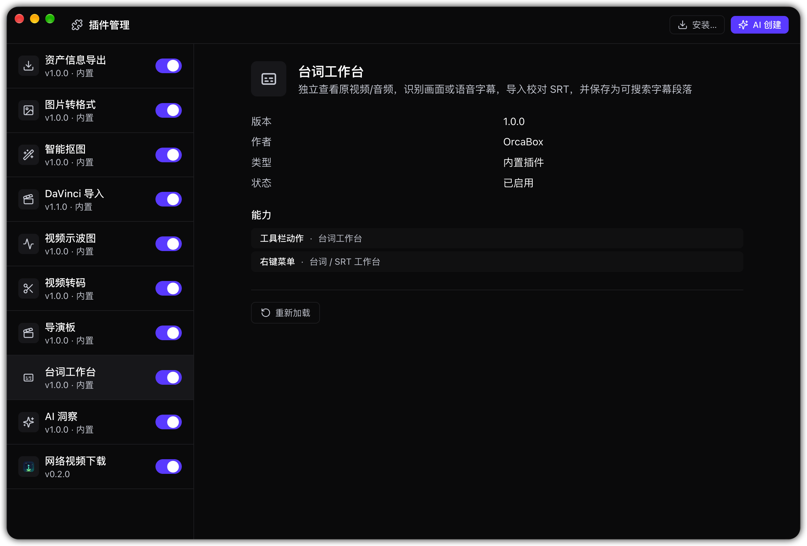

产品概览
OrcaBox 是面向创作者的本地素材管理工具。它把分散在磁盘、项目文件夹和网页中的内容汇总到一个资料库里，方便预览、检索、分类和送往其他创作软件。
资料库与原文件
资料库保存索引、缩略图、标签等管理数据；添加来源文件夹时不会把原文件复制到资料库。需要直接导入或移动文件时，请留意相应操作的目标目录与确认提示。
主界面分区
左侧切换来源、合集和管理模块；中间浏览素材；点选后在右侧查看详情。双击素材可打开独立预览。

下载与安装
选择安装包
- 在官网下载区选择适合设备的安装包：macOS Apple Silicon / Intel，或 Windows x64 安装器 / 免安装版。
- 从 CNB 主下载源获取文件；遇到下载问题可使用 GitHub 备用源。
- 安装并启动 OrcaBox。首次使用按下一节建立资料库；已有资料库则选择“打开已有资料库”。
检查更新
更新入口位于应用内“设置 → 概览 → 关于与更新”，也可从右下角“帮助与支持”检查更新。macOS 更新通过下载 DMG 手动安装；Windows 按应用内更新提示操作。
首次建立资料库
创建独立资料库
先准备一个独立的空文件夹，存放索引、缩略图和缓存；不要选磁盘根目录或原始素材文件夹。在欢迎界面点“创建资料库”，指定这个空文件夹。已有资料库则点“打开已有资料库”，选择包含 data/library.db 的目录。
添加素材来源
从左侧“来源文件夹”添加存放图片、视频、音频或工程文件的目录，可以添加多个磁盘上的路径。此时建立索引，不复制原文件。
等待扫描与切换资料库
后台扫描后会显示素材、元数据和缩略图。首次索引较慢时，可先查看任务状态；左上角的资料库名称可用于切换资料库。
切换资料库只切换当前索引，不移动原始素材。移动磁盘未连接时，先重新连接来源磁盘，再打开资料库或刷新来源。
浏览、选择与导入
浏览方式
“全部素材”汇总各来源；左侧来源树可聚焦具体目录。顶部可切换网格/列表、布局密度、排序、筛选和分组。图片卡片按原图方向和宽高比显示，长图不会被裁切或压缩变形。
选择与批量操作
点选素材查看详情；多选后底部出现批量工具栏，可统一收藏、标记已处理、添加标签或合集、批量重命名、复制名称/路径、导出、刷新缩略图或移入回收站。先核对选中数量；重命名与移入回收站会影响原文件。

预览与取用
双击打开独立预览。右键菜单可按素材类型提供复制路径、在其他应用打开、导出、重命名等操作；也可按目标软件支持情况拖拽素材。macOS 可使用“共享”打开系统共享面板；Windows 版该入口目前标记为“开发中”，暂时请使用“复制到剪贴板”后粘贴到目标应用。
导入与移动文件
添加来源目录只建立索引。把本地文件导入已有来源，或移动素材到其他目录，是文件操作；执行前核对目标路径、同名文件处理和确认提示。
搜索与筛选
关键词与条件
在顶部搜索框查找文件名、标签和素材信息；输入 / 可打开词库。筛选面板可按类型、扩展名、收藏、评分、颜色和标签缩小范围，清空条件后恢复完整结果。
按颜色查找
图片、GIF 或视频代表帧完成颜色分析后，可在颜色面板选择色相、亮度区域或输入色值，查找相近颜色。

保存为智能文件夹
设好搜索词和筛选条件后，在搜索中心使用“保存当前搜索”。保存的搜索会作为智能文件夹供以后调用；改变条件时请重新保存需要保留的组合。
多格式预览
双击素材进入预览；是否可用以及具体控制项取决于格式和系统环境。下面是主要预览类型：
图片与设计文件
打开 PNG、JPEG、WebP、AVIF、HEIC、PSD、TIFF 等图像，可按格式查看缩放、色板、直方图及元数据；部分图片还提供裁剪和处理工具。文件损坏或系统不支持解码时，预览可能不可用。
视频与时间点标记
视频预览直接使用原文件或系统/原生媒体运行时；可查看胶片条、将当前帧设为封面，并在播放位置添加标记，从标记列表跳回对应时间码。不会为播放生成视频代理文件；具体编解码能力取决于系统与可用运行时。

音频波形与试听
音频网格显示波形；点选后可在卡片和右侧详情试听，双击进入独立预览。已选音频播放时，鼠标离开卡片不会自动暂停；切换这些预览区域会延续播放位置，不会同时播放多个声音。显式暂停、取消选择或切换播放对象时停止。

Lottie 动效
JSON 和 .lottie 动效在可见素材网格中实时播放；打开独立预览可调整播放速度和循环。动画能否完整显示取决于资源内容。
3D 模型
GLB、GLTF、OBJ、FBX、USDZ 等模型可交互查看。材质、纹理和外部依赖是否齐全，取决于模型文件及其关联资源。
字体预览
打开字体素材可切换预览、长文本、字形表与元数据，核对字形效果和文件信息后再用于设计项目。

文档与代码
PDF、文本、Markdown 和代码文件可从素材列表进入查看；可读内容与显示方式随格式而异，需要修改源文件时请在相应编辑器中打开。
标签、合集与素材整理
收藏、标签与备注
选中素材后，可在详情中设置收藏、评分、标签和备注；多选适合统一添加标签或收藏。“标签管理”集中维护已有标签。
合集
把不同来源的素材放进同一合集，方便按项目查看，不要求移动原文件。可从左侧合集入口回到已整理的内容。

常用整理视图
左侧的收藏、最近新增和重复文件等入口，分别帮助查找常用、近期和可能重复的素材；处理重复项前请逐个核对文件。
回收站与恢复
移入回收站会把原文件放入对应来源根目录下的 OrcaBox 隐藏回收目录，不只是移除索引。到回收站可恢复所选、永久删除或清空；永久删除前请确认要保留的文件。
来源目录管理
连接与浏览目录
“来源文件夹”可以连接多个磁盘和项目路径。展开左侧目录树，进入子文件夹浏览；资料库数据与这些原始目录分开保存。
目录菜单与自动标签
右键来源或子目录可按位置使用自动标签、移动目录、隐藏或锁定等管理项。设置自动标签后，该目录中的新增素材可沿用约定分类；移动目录会改变文件路径，操作前请确认目标位置。
右键文件夹还可置顶，或按名称排序当前子层级及全部子层级；置顶项优先显示。排序与置顶只改变左侧目录树的显示顺序，不会移动或修改原文件。
重扫、重新分析与丢失文件
目录菜单可重新扫描文件或重新分析素材。素材显示丢失时，先检查移动磁盘和原路径；需要排除某个目录时，区分“移除来源”与“移除索引并排除扫描”，按菜单提示确认影响范围。
网页收藏与浏览器采集
保存网页链接
把网页链接拖入 OrcaBox 或使用网页收藏入口，集中保留网页标题、来源与预览信息；收藏可按文件夹整理。网页收藏与下载本地文件并不是同一件事。
连接 Chrome 扩展
可选的 Chrome 扩展用于扫描当前页面中的图片、视频、Lottie 与素材链接，再发送给本地 OrcaBox。到官网下载区取得扩展 ZIP，解压后从 Chrome 扩展程序页面加载，并保持桌面应用运行。
导入小红书笔记
采集小红书笔记时，可在浏览器扩展中选择当前笔记并发送到 OrcaBox；也可在电脑端“粘贴链接导入”中粘贴从手机复制的小红书分享文本（包括 xhslink.cn 短链接）。成功获取的素材会保存到目标导入目录；通过浏览器扩展采集时，笔记标题、作者、话题、正文及原文链接另存为该目录下的 note.md。不会改动网页原内容。受页面登录、资源权限或链接失效影响，部分素材可能无法下载，完成后请核对导入结果。
采集网页内容前，请确认你有权保存和使用相应素材；网页资源可能因登录状态、来源限制或链接失效而无法获取。
本地 AI 与颜色分析
准备本地模型
在“设置”的本地模型中心准备所需模型，再对支持的素材运行 AI 标签、描述或相关索引任务。模型下载、运行速度和支持能力取决于设备及所选模型。
标签与结果审查
AI 分析结果可在审查界面核对，再用于分类和检索；不要把自动生成的标签当作人工确认的事实。

生成图片描述
选中图片后，可在右侧详情的“AI 描述”点击“生成”。HEIC/HEIF 画面在 macOS 或 Windows 上通过系统图片解码后送入模型；Windows 可能需要安装 HEIF 图像扩展。若系统无法读取损坏或不受支持的文件，界面会显示原因，可将原图另存为 JPG/PNG 后重试。生成的描述独立保存，不修改原图或手写注释。
颜色分析与远端能力
颜色提取和相似颜色检索可帮助寻找视觉参考。
插件与创作工具
插件中心
从插件中心查看和管理已安装工具。插件可把操作接入素材菜单或独立面板，具体入口和权限以插件界面为准；安装第三方插件前确认来源与授权范围。

DaVinci Resolve 工作流
选择素材后，通过对应插件送入媒体池或时间线。操作前启动 DaVinci Resolve，并在插件设置中确认目标项目和位置。
任务中心与素材审查
扫描与导入队列
左侧“任务中心”汇总导入、扫描和分析状态；导入队列显示批量任务进度。大量文件首次索引可能需要等待，不必重复添加来源。
失败与丢失项
失败项可按界面提示重试或检查来源文件。预览缺失时先看任务状态、磁盘连接和文件格式，再对来源重新扫描或分析。
素材审查台
在素材审查台集中核对待处理的素材信息和分析结果，再决定是否采用或继续调整。
设置、帮助与快捷键
资料库与偏好设置
从左下角进入“设置”，管理资料库、外观及模型等选项；“概览 → 关于与更新”可检查当前版本。
网络代理与网页素材导入
在“设置 → 网络”选择“系统”（默认）、“直连”或“手动代理”。手动代理填写无需账号密码的 http://主机:端口 或 socks5://主机:端口，点击“保存并启用”。此设置仅用于网页链接、剪贴板、浏览器扩展的素材导入，以及网络视频下载插件；不会改变系统代理、AI 接口、软件更新或本地文件预览。macOS 和 Windows 均可使用。关闭代理后可选择“直连”再重试；网络连接重置、地区访问限制和登录要求仍可能导致失败。
Pinterest 可粘贴公开 Pin 页面或图片直链，Instagram 可粘贴公开帖子或 Reel 链接；若页面不提供可下载的媒体，请在浏览器登录后重试，或使用网络视频下载插件并选择浏览器登录态。导入会把下载的素材副本保存到资料库的导入目录，不会修改网站或本地原文件。
帮助与支持
右下角“帮助与支持”可重启交互式新手引导、打开快捷键面板、检查更新或提交反馈。
快捷键
macOS 常用 ⌘，Windows 常用 Ctrl。右键菜单显示当前平台的快捷键；具体组合可在快捷键面板查看和自定义。
常见问题
添加来源会复制、移动我的原文件吗？
不会。添加来源建立的是索引。只有你主动执行导入、移动、重命名、删除等文件操作时，才会按界面提示改变文件。
资料库与来源文件夹能是同一个目录吗？
不建议，也不应把装有素材的普通目录当作已有资料库打开。使用独立空目录保存资料库数据，再添加素材目录作为来源。
换电脑或移动磁盘断开后找不到素材？
先确认原磁盘已连接且路径仍可访问。资料库记录的是来源路径；路径变化后需要在应用里重新连接或管理来源。
视频播放会生成代理视频吗？
不会。视频预览使用原文件的浏览器直出或系统/原生播放路径；允许生成静态缩略图、胶片帧等预览信息，但不会为播放制作转码视频代理。
AI 功能必须联网吗？
本地模型任务可在模型准备好后于设备上运行；模型下载可能需要网络。远端 AI 端点属于单独配置的功能，是否联网取决于你的设置。
如何查看当前版本具体改了什么？
请打开更新记录；功能使用方式以本文档为准，版本差异以发行记录为准。
版本与反馈
版本变化
功能入口与可用性可能随版本调整。本文档说明当前用法；新增、优化和问题修复请查看发行记录。
查看更新记录提交反馈
遇到文档未覆盖的问题，可从应用内“帮助与支持 → 反馈建议”提交重现步骤、系统版本和素材格式。